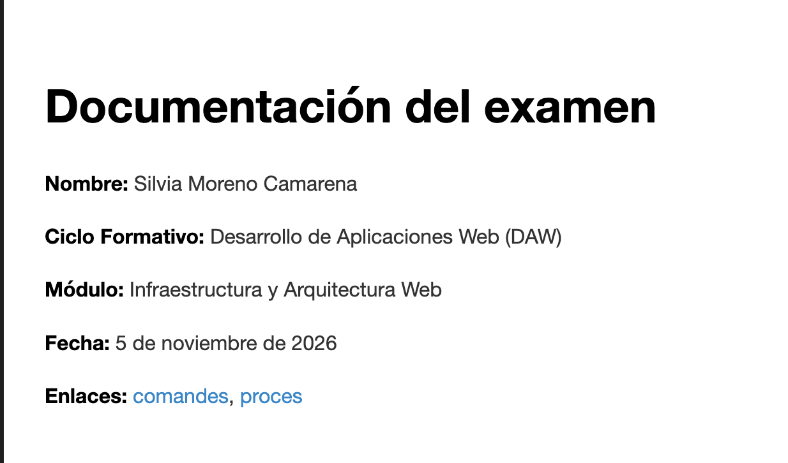

Proceso de trabajo
1. Creación y clonación del repositorio
Proceso de trabajo ( AQUÍ FALTA AÑADIR TABLAS, LISTAS, ENLACES, IMÁGENES Y CÓDIGO)
5. Elementos de Markdown utilizados
Tabla
| Comando | Descripción |
|---|---|
git init |
Crea un repositorio |
git status |
Muestra el estado del repositorio |
Lista
- Crear el repositorio.
- Crear las ramas.
- Crear la documentación.
- Publicar el proyecto.
Enlace
Imagen

Código
git status
git add .
git commit -m "Actualizar documentación"
git push
1. Creación y clonación del repositorio
AÑADIR ANOTACIONES DEL LIBREOFFICE
Primero creé una carpeta llamada PracticaExamen en mi ordenador y la abrí con Visual Studio Code.
Inicialicé el repositorio local utilizando el comando
git init
A continuación, cloné el repositorio del profesor desde GitHub
git clone https://github.com/espemm/UD01_exam_IAW.git
Después copié el archivo UD01_exam.md del repositorio clonado a la carpeta principal de mi proyecto
cp UD01_exam_IAW/UD01_exam.md .
Por último, añadí el archivo al control de versiones y realicé el primer commit
git add UD01_exam.md
git commit -m "Añadir enunciado del examen"
De esta manera, preparé mi repositorio local con el enunciado original del examen.
2. Creación y gestión de ramas
El repositorio principal se creó en la rama main, donde guardé el enunciado original del examen.
Después publiqué el repositorio en GitHub utilizando Visual Studio Code.
A continuación, creé una nueva rama llamada documentacion para trabajar en el proyecto MkDocs sin modificar la rama principal.
Utilicé el siguiente comando
git checkout -b documentacion
Este comando crea una nueva rama y cambia automáticamente a ella.
Para comprobar las ramas disponibles y saber en cuál estoy trabajando, utilicé
git branch
La rama activa aparece marcada con un asterisco (*).
3. Creación y configuración de MkDocs
Una vez creada la rama documentacion, comprobé que MkDocs estaba instalado en mi ordenador.
mkdocs --version
Después creé el proyecto MkDocs dentro de la carpeta principal del repositorio.
mkdocs new .
MkDocs generó la siguiente estructura
docs/
index.md
mkdocs.yml
A continuación, inicié el servidor local para comprobar que la documentación funcionaba correctamente.
mkdocs serve
Abrí la dirección http://127.0.0.1:8000/ en el navegador para visualizar la página.
Por último, personalicé el archivo docs/index.md con los datos del examen y modifiqué el archivo mkdocs.yml para cambiar el nombre de la web.
4. Organización de la documentación
Para organizar la documentación del proyecto, creé diferentes archivos Markdown dentro de la carpeta docs.
index.mdcontiene la página de inicio.comandes.mdcontiene las tablas con los comandos de Git y sus descripciones.procés.mdcontiene la explicación de los pasos realizados durante el examen.